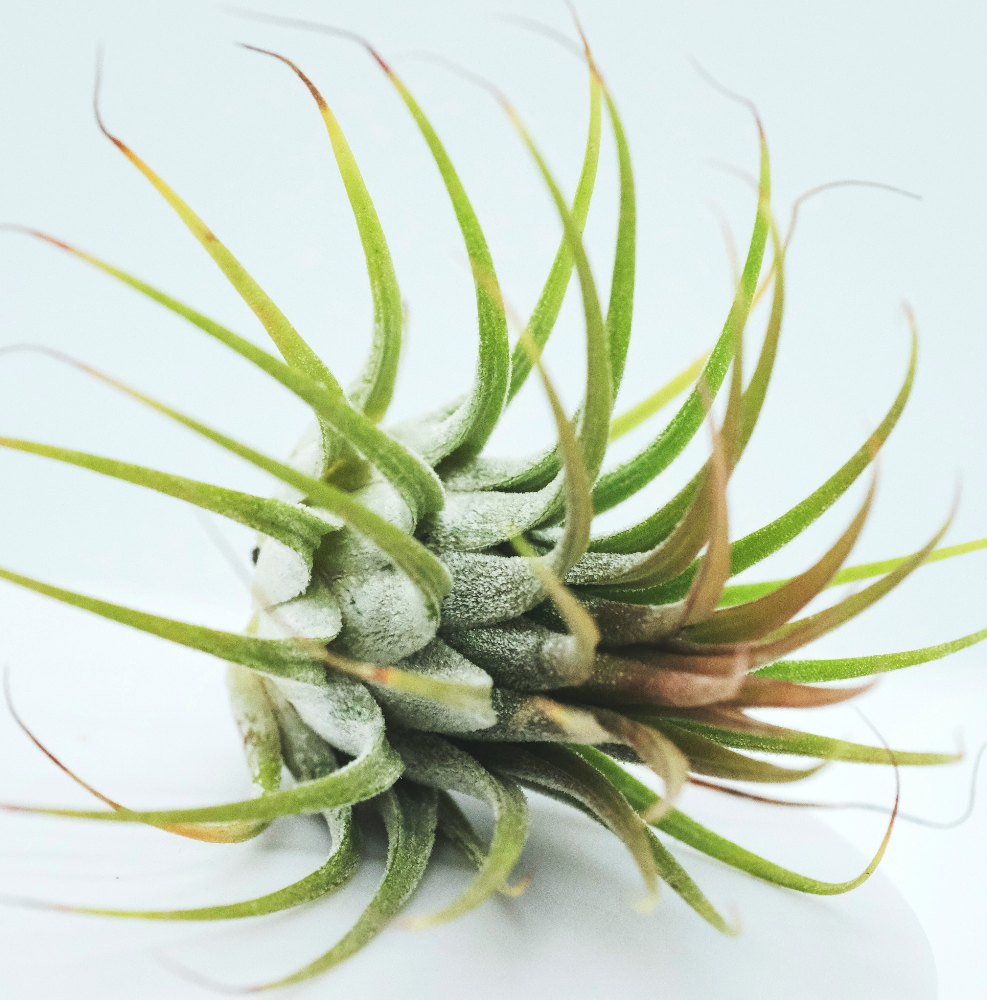

| Plant | Photo | Watering | Lighting | Toxicity | Tips |
|---|---|---|---|---|---|
| Air Plant |  | Soak for 30-60 minutes once a week | 4-6 hours of bright, filtered light a day | Non-toxic | Don’t place in soil, they grow by themselves |
| Calathea | Water every 2-7 days | Low, indirect light | Non-toxic | Loves humidity | |
| Fiddle Leaf Fig | Water when top soil is partially dry | Bright, indirect light | Toxic to dogs, cats, and horses | Humidity is its best friend | |
| Peperomia | |
Water once 50-70% of top soil is dry | Bright, Indirectlight | Non-toxic | Loves high humidity |
| Philodendron | Water when inch of soil is dry | Any range of light | Toxic to humans and animals when ingested | Yellow leaves mean too much sun | |
| Pothos | Let dry between watering | Bright, indirect light | Toxic to humans and animals when ingested | Pale leaves mean too much light | |
| Snake Plant | Let soil dry before watering | Indirect sunlight | Toxic to humans and animals when ingested | Easy to care for, low maitenence | |
| Spider Plant | Water when top half of soil is dry | Bright, indirect light | Non-toxic | Can do well in low humidity |
Sources: Gerbes BHG Bloomscape Photos: Unsplash